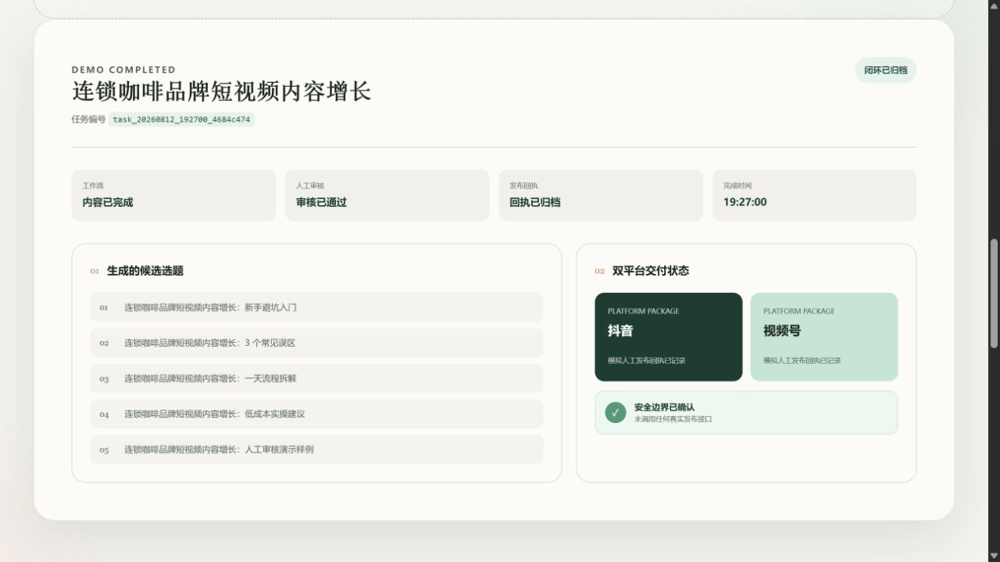

AI CONTENT WORKFLOW · CASE STUDY
把一个主题，变成
可审核、可交付
的内容闭环
本地运行、人工把关、全程留痕的短视频内容生产系统。

核心流程
全程按 task_id 留痕- 01主题
- 02生成
- 03人工审核
- 04双平台交付
可替换接口状态可追踪Windows / WSL2
默认 dry-run / mock · 不自动正式发布AI CONTENT WORKFLOW · CASE STUDY
本地运行、人工把关、全程留痕的短视频内容生产系统。

核心流程
全程按 task_id 留痕可替换接口状态可追踪Windows / WSL2
默认 dry-run / mock · 不自动正式发布